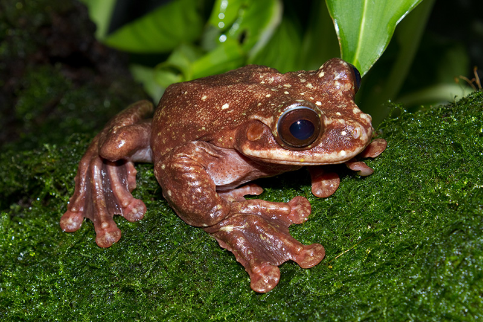
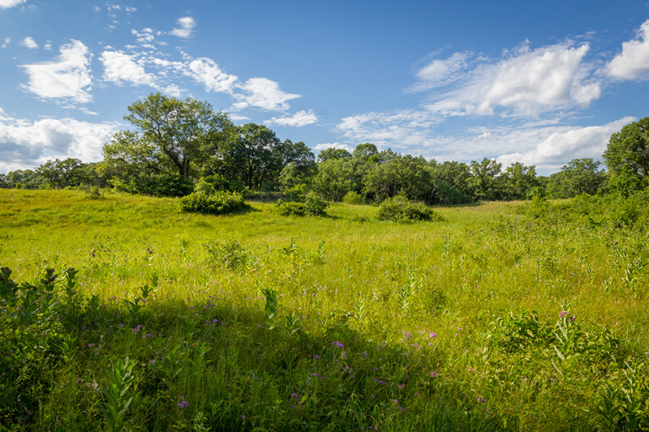
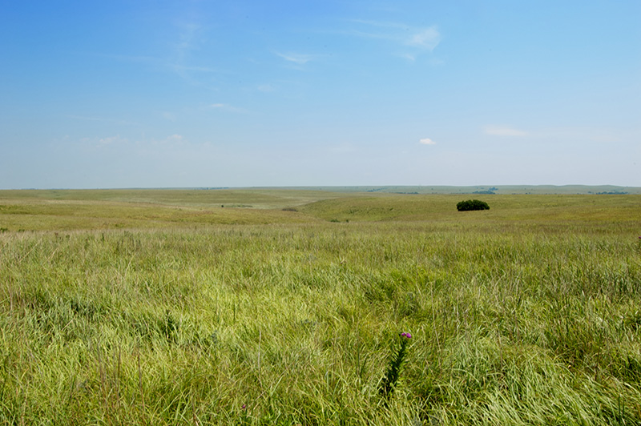
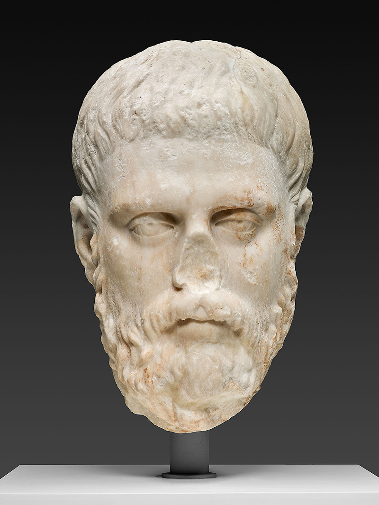

In seeking a means to heal our wounded planet, we should look to the painstaking, cautious craft of art conservation.
It is our sad lot that we love perishable things: our friends, our parents, our mentors,
our partners, our pets. Those of us who incline to nature draw this consolation:
most lovely natural things – the forests, the lakes, the oceans, the reefs – endure at scales
remote from individual human ones. One meaning of the Anthropocene is that we must witness
the unravelling of these things too. A tree we loved in childhood is gone; a favourite
woodlot is felled; a local nature preserve invaded, eroded and its diversity diminished;
this planet is haemorrhaging species.
When a rare Panamanian frog was named in 2005 for George Rabb, an eminent herpetologist and
friend to many in the DarwinChicago conservation community, we celebrated this newly named animal.
By the time he died in 2017, Rabb’s fringe-limbed frog (Ecnomiohyla rabborum) was assumed
extinct in the wild.
Rabb’s fringed-limb tree frog of central Panama. Photo courtesy Wikipedia
There are two types of charisma: the charisma of the lit stage and that of the lambent sanctuary. Rabb's charisma was the latter, softer, form. One of the most influential
conservation biologists of his generation, he directed the Brookfield Zoo in Chicago
from 1976 until 2003. He was involved in the protection of species and habitats around
the globe. I first met him in the late-1990s at a meeting of the Midwestern regional
conservation alliance, Chicago Wilderness. What I learned from George – who knew keenly
what it is to endure loss – is that repair is possible.
I had moved to Chicago in 1998 after several peripatetic years as a young scholar.
Chicago's reputation for art and architecture – in which I had a keen and longstanding
interest – was familiar. This provided at least one reason why the move there was pleasing.
Perhaps my youthful reading of Upton Sinclair's The Jungle (1906) had overly
impressed me, as I had not anticipated much nature in that city. However, I happily discovered
that, in place of Sinclair's industrial jungle, there was much wild greenspace.
The greater Chicago area has about 200,000 acres of protected open land (about the size of
Shenandoah National Park in Virginia).
I have now devoted two decades of my research life to thinking about conservation challenges
in these fragmented preserves. Alongside such studies, I adopted a more serious approach
to understanding art and learning, as an avocation: how to draw, if not well, at least
well enough to illustrate a recent
book.
It took years for me to appreciate how cultivating these private aesthetic interests might
influence my professional outlook in conservation biology.
The Chicago Wilderness alliance, where I first met Rabb,
advocates for the protection of species in these wild lands within hitting distance of
a sprawling metropolis. After I'd attended and contributed to a few meetings in the
late-1990s, George, then in his 60s, ambled over and quietly presented me with copies
of several scientific papers that he said would be helpful. These papers referenced the
relatively newly minted discipline of restoration"> ecology. I had heard the term before
but hadn't realised that restoration management was regarded as the best hope for
Chicago's ailing ecosystems. Oak savanna, tall grass prairie and other relictual Midwestern
habitats – where only small stands of once-vast habitats remain – are considered globally
imperilled, rarer, in fact, than many iconic tropical habitats. Oak savanna, for example,
with its well-spaced bur oaks and lush herbaceous undergrowth, was more or less resurrected
from the dead (fittingly, the last remaining exemplars of this habitat were often found
in old cemeteries). So rare had some of these ecosystems become that protection alone would
never be enough; these natural areas needed active resuscitation. They needed restoration

Typical oak savanna, Uncas Dunes, Minnesota. Photo by Brett Whaley/Flickr
William Jordan III, one of the pioneers of the field, coined the term restoration ecology
while working at the University of Wisconsin-Madison arboretum in the 1980s,
describing it as the attempt, sometimes breathtakingly successful, sometimes less so,
to make nature whole. Where ecosystems have been degraded because of human activity
– including an overexploitation of useful species, invasion by exotic pests, erosion of
soils, pollution from excessive nutrients, overgrazing by animals, and so on – restoration
promises to reverse the damage and give these systems new life.
The practice was first championed as a cutting-edge conservation strategy by professional
groups such as the Society for Ecological Restoration, established in 1988. Undeniably,
there was controversy in the decade or so after. To what, exactly, should systems be restored or,
more accurately, to when should they be restored: perhaps the target might be the
conditions prior to European settlement in the United States, or, at an extreme, might we
rewild to the conditions prevailing in the late Pleistocene? Some philosophers fretted
over the ontological status of these newly managed systems – are they faked nature?
Some Chicago writers complained that restorationists were carving up the woods.
Some policy scholars worried that seeing nature as repairable could justify harsher
use of the environment: why be concerned about resource extraction if all the parts
sundered in the process could be adroitly returned to their place? Nonetheless,
by the 1990s, restoration practices had gained widespread support among academic ecologists
and landscape managers.
Restoring hardwood forests to Ireland would be a conservation achievement of immense significance
In 1992, that titan of biodiversity conservation E O Wilson
declared: The next century will, I believe, be the era of restoration in ecology. True to this promise,
and setting some of the early intellectual skirmishes aside, the successes of ecological
restoration since have been numerous.
In his bookOur Once and Future Planet: Restoring the World in the Climate Change Century (2013),
the environmental journalist Paddy Woodworth travels the globe bearing witness to the work and
interviewing the architects of some iconic restoration projects. Noteworthy successes include
the landscape-scale restoration project at Área de Conservación Guanacaste (ACG) in Costa Rica,
an effort led by the conservationists Dan Janzen and Winnie Hallwachs. ACG stretches across several
habitats – tropical dry forest, rain forest and cloud forest – and by some estimates the restored
landscape provides habitat for up to 350,000 species.
In New Zealand, where conservationists have been trying to bring back some of that country's
rarest species, such as the black robin and the Chatham Island taiko, from the brink of extinction,
large-scale restoration is also underway. Another example, close to my heart since I spent several
summers in the early 1980s volunteering in such efforts, are attempts to restore Irish oak woodlands.
Despite Ireland's image as a verdant island, it is the least wooded European country, most of the
primeval woods having been felled centuries ago. Restoring hardwood forests to Ireland, in some cases
by converting thousands of hectares of former commercial coniferous plantations to native woodland,
would be a conservation achievement of immense significance. Several projects are already reporting
success, and should increase habitat for trees, rare bryophytes, insects and rarer mammals.
In the decades subsequent to my arrival in Chicago, I have learned all I can about restoration ecology,
becoming both a published researcher in that subfield and a practitioner (in a minor key). I have cleared
brush, I have burned acres, I have scattered prairie seed. I have witnessed great successes, and I have
been aggrieved by the shortcomings of some of the work. Some of these shortcomings I initially took
to be local problems, but now I realise are universal ones.
Two instances, in particular, still haunt me.
Almost 20 years ago, I hitched a ride from restoration to the town of
Normal, Illinois. It was shortly after learning about ecological restoration from Rabb, and I had become
an immediate enthusiast, thinking of it as the great innovation of our era. Thus, I was travelling to
a conference at Illinois State University with a restorationist who built wetlands for a mitigation-banking scheme.
Under the US Clean Water Act, a wetland destroyed in Chicago,
for example – by extending a parking structure, say – could be offset by the creation of a wetland
of equal value in the same watershed, though far from the city.
It was a summer day, the car windows were open, and we were brimming with optimism. A few miles out
of Chicago, my friend mentioned that one of his sites was coming up; we could turn off the highway
to witness it. As he described it, this wetland had been restored to a full flourishing of species
– plants, amphibians, birds. However, when we pulled up and got out of the car, we saw it had become
a cattail marsh, almost a monoculture. We monitored it for years, he remarked stoically.
And on we went.
Again and again, he announced a project was coming up, and each time he registered his
disappointment. It was as if we were wandering about the Louvre, looking for masterpieces, and yet all
we were seeing were canvases blackened and charred. By the time we got to Normal, the restorationist
was not even slowing down.
More than anything else, this trip complicated my early enthusiasm about the prospects for an easy
fix – determination alone would not suffice.

Tallgrass prairie at the Tallgrass Prairie National Preserve in Kansas. Photo by Molly Des Jardin/Flickr
A more recent contretemps provoked disquiet about the relationship between restoration ecology
as a scientific discipline and its implementation in the field. I had been volunteering for a while
with a group that cleared invasive brush from a tiny relict prairie in the Chicago area.
After a hard morning's work, a seasoned volunteer expressed exasperation that a thicket we'd just
cut had been cleared thrice in the preceding years. Each time it was cleared, invasive species had
reclaimed the plots. At that time, I was a scientific collaborator on a project devising experimental
approaches to restoration. What, our group asked, would result if the restorative process started
with the soil? I suggested a soil amendment – the addition of wood chips before seeding with native
plants – as a way of slowing reinvasion. The steward was sceptical but proposed meeting the following
weekend; the site's botanical advisor would join us. As we three walked through the degraded part of
the prairie, we designated potential plots for a field experiment. Yes, I conceded, some native plants
would indeed die when we manipulated the soil (it would require some superficial tilling).
Eventually, after pausing for a long while under the hot Midwestern sun, the steward asked me:
Why do I feel like I am sanctioning a thalidomide experiment?
I recognised then that we wouldn’t
perform the experiment at that site. As I took her leave, she and I gravely shook hands. I turned
to offer my hand to her companion, the botanist, who recoiled from me and shuddered.
Decisions about which species live, and which die, can make even the most ardent
conservationist squeamish
Among other tribulations, restoration initiatives are often stymied by diffusely stated objectives.
What, in practice, should serve as the original against which the repair can be assessed?
In those cases where there is sufficient vegetation history, pre-settlement conditions might
be established. But in many places pre-settlement doesn't mean without human influence.
With the growing awareness of deep historical and oftentimes ongoing management by Indigenous
populations, how should these practices be taken into account? What might serve as restoration
targets for systems that are under the long-term care of human populations?
Just as I had discovered in Chicago, in his global survey of restoration projects Woodworth
observes that data-driven evaluation of vaguely articulated outcomes are hard to do, seldom
undertaken and almost never long-term. Furthermore, even with clear goals, substantial technical
challenges can hamper progress. Restoration requires intervention, and methods can prove controversial,
often implemented without full knowledge of the potential negative effects for species and processes
that aren't the direct target of management. Is this herbicide going to kill microbiota? Who knows?
Let us spray!
Habitat cleared of invasive species (removal is often the most expensive part of any conservation
project) frequently reverts to a degraded condition in the absence of almost continuous management.
Mounting costs from the battle against invasive species (metaphors in restoration are often martial)
is perhaps the largest obstacle to restoration success in most habitats. Acacia and other woody species
re-invade the fynbos, an exceptionally biodiverse South African habitat; rhododendron shrubs
re-annex cleared oak woodlands in Ireland; buckthorn and honeysuckle – two of the most common
woody shrubs in the US Midwest, despite massive efforts to clear them – re-occupy once-liberated
habitat. The monetary expense of restoration, in addition to the human labour, is immense.
In addition to the problem of re-invasion, the practice of killing undesirable species is ethically
fraught. Welcome to our conservation project, a welcoming steward might say, here's a mattock,
please kill that shrub. In an effort to restore island biotas, in New Zealand and Hawaii for example,
there is often, by necessity, a widespread slaughter of exotic mammals. Making decisions about which
species live, and which die, can make even the most ardent conservationist squeamish.
A final controversy that besets many projects is the question of who gets to weigh in on conservation
decisions. This can be especially contentious on lands mandated to serve multiple purposes: biodiversity
conservation, say, but also, human recreation, including picnicking and vehicular pastimes. Whose land
is it, anyway? Whose expertise matters most? How should disputes be resolved? Decisions are often made
by fiat.
Having survived the intellectual skirmishes of its early years, was restoration failing its greatest test?
Did it simply not work? Was it socially feasible? Was the practice anchored in the best science?
How might ecological restoration be improved?
Some of the field's most senior theorists now express similar scepticism to mine about the feasibility
of attaining restoration goals. Many suggest we abandon the traditional goals of returning ecosystems
to a semblance of their former structure and function, and should opt instead for the management of
novelty, with restored systems hosting biological communities without historical analogue.
A central issue that faces restoration management is how to think about our relationship with the past.
Should conservation aim for a complete ablating of the human influence in those sites set aside for the
protection of biological heritage? Alternatively, perhaps what we need is a more nuanced relationship
with what is ecologically past, and a greater range of targets for ecological restoration.
As I became despondent about the limited prospects for accomplishing
nature restoration, I was spending much of my spare time thinking about damage and repairs of another
kind. Working a few El train-stops away from the Art Institute of Chicago, I became a very regular
visitor over the years, and an aficionado of decay, taking copious notes on broken art. I developed a
fascination with the work of curators and art restorers, and the decisions they make about intervening
in an artwork's life. A suite of botched efforts – starting with the 2012 headline-grabbing restoration
of Ecce Homo (‘Behold the Man’) in the Sanctuary of Mercy church in Borja, Spain, and extending
to the more recent, curious repair of a figurative sculpture in the Spanish city of Palencia – caught my
attention. I became aware of the immense literature on the topic of controversial repair, a literature
that goes back several centuries now. The restoration of art, like ecological restoration, has come under
intense scrutiny.
I discovered that there are important parallels between the theory and practice of repairing damaged
art and that of repairing damaged nature. But there's an important difference. The environmental
sciences investigate processes of nature that have endured billions of years, and yet scientific
thinking about the repair of ecosystems is but decades old. Artistic production is, on the
other hand, of relatively recent origin, yet systematic thinking and writing about the repair of
tarnished art is centuries old. It seems very likely that ecological restoration can learn a
considerable amount from this senior literature.
For some years now, I've taken a particular interest in Portrait Head of a Philosopher (second half
of the 2nd century CE). This marble, life-sized head is a beautiful but
befuddling mosaic of damage and repair. It was acquired by the Art Institute's collection in 1923.
Katharine Raff, an Art Institute curator,
provides
a compelling history of this object in Roman Art at the Art Institute of Chicago (2017).
The philosopher's face is mature though by no means old; his hair is wavy and his beard is ample though
not unkempt; his expression is remote but not grave. Philosophers who were commonly represented similarly
at the time include Epicurus (341-270 BCE), Metrodorus
(331-277 BCE) and Hermarchus (c340-after 270 BCE),
the latter two being students of the former.
There is, apparently, some resemblance between this portrait
and another of Metrodorus.
Portrait Head of a Philosopher, second half of the 2nd century CE. Public domain and courtesy the Art Institute of Chicago
The portrait appears to have suffered some damage in antiquity. There are gaps (lacunae) missing at
the back of the head, and a crack close to the hairline at the left side. Raff speculates that these
injuries necessitated some ancient reworking. Sideburns and beard might have been reduced in volume in
antiquity. Some minor discoloration on the face reveals weathering, or might tantalisingly indicate a
period of burial. The drilling of the pupils and incision of the irises could also be antique interventions.
What was acceptable practice in art conservation a century ago would cause scandal now
In addition to these ancient repairs and modifications, the portrait was also subject to
aggressive interventions shortly before acquisition. Raff sees this especially in the reworking
of the hairstyle. And, apparently, shortly after the piece was acquired, the portrait needed
repairs to the lower part of the beard at the chin.
Thus, this antique marble portrait – so simple, so serene, so contemplative – is not so simple.
The artist, having concluded their labours, launched the portrait on a millennia-long odyssey of
travel, display, apparent burial, evident excavation, alteration, repair, restoration and reversals
at the hands of artist and conservators.
At some point in all this, the head lost its nose, gained a nose and, during its time in Chicago,
lost that surrogate nose again. There’s no mention of the whereabouts of this philosopher's original
nose in the literature. Did it go missing in antiquity? Was it tossed into the Tiber, from there to
roll ashore and erode into a curiously shaped pebble?
More than any other artwork, it was my long hours with Portrait Head of a Philosopher – for a while,
I was visiting him daily – that provoked my interest in links between the conservation of cultural
objects and those of nature. If an artefact as relatively uncelebrated as this marble is subject
to a dense history of decay, rejuvenation, repair and, indeed, the reversal of repairs, then to
visit any museum is to immerse oneself into a sea of relentless curatorial industry.
As I became more and more uneasy about ecological restoration, I became curious if art conservators'
approach to the task of managing artworks might be helpful for biodiversity management, and emailed
Mark Pascale, a curator in the Art Institute's Department of Prints and Drawings, to explain my odd
purpose. Pascale wrote: My colleagues in conservation would bristle at your use of the word “restoration”,
because that is not what they do. If anything, they work at reversing restoration that may have been
done in the past. They can explain. When I subsequently met with the painting conservator
Allison Langley at the Art Institute, she confirmed this. What was acceptable practice in art
conservation a century ago would cause scandal now. Their practice is, in many circumstances,
less aggressive today.
I emerged from that meeting with a lengthy bibliography of the history of art conservation,
which I've studied assiduously. It's not a small literature. I've been especially intrigued by disquieted
responses to the excesses of past restorative efforts. By the end of the 20th century, restoration became
such a discredited term in art conservation circles that it's now rarely used.
Since 1994, the term restoration hasn't been used in the Code of Ethics and Guidelines for Practice
of the American Institute for Conservation of Historic and Artistic Works, the primary professional
body for the discipline in the US.
The discovery that cultural conservators now use the term restoration circumspectly, if at all,
seemed, at first, to undermine my project. Viewed another way – one more hospitable to my
venture – the caution regarding the term restoration in art conservation might prefigure a similar
fate for the restoration of nature. If the reputation of art restoration was tarnished by a history
of calamitous interventions on important cultural works, a future generation might regard the outcome
of ecological restoration with a similar wincing dissatisfaction.
The complex history of the waxing and waning fortunes of art
restoration can be followed in essays, manifestos and missives from the 18th through to the 21th century.
Historically, such debates were especially testy in the literature on architectural heritage:
the architect Eugène-Emmanuel Viollet-le-Duc and the artist and poet William Morris are especially
important writers on this subject. Morris dubbed the Society for the Protection of Ancient Buildings
(which he co-founded in 1877) as the Anti-Scrape Society, to signify his concern about the
destructive restoration of old buildings in the name of conservation. He was alarmed that an
aggressive return of buildings to some idealised past could remove accumulated additions to a building
that add considerable architectural interest.
A central matter in the older literature of art conservation is how much to privilege the aesthetic
intention of the artist.
Should one be concerned with returning the work to its original condition?
Is the work always best seen as when it was first viewed? We might quite rightly be suspicious when
those aesthetic values that originated with the artist are overthrown by more mercenary ones: when,
for example, the market value in its current condition supersedes all in determining conservation
decisions. But since, as often as not, the artist no longer owns the piece, should we really feel
ethically obliged to their intentions? Once the artist's work is completed, the object begins to age,
and it gets used (or abused) in a variety of ways that can complicate the task of the conservationist.
Our museums are full of objects that have their stories etched into their surfaces.
The complex historical trajectory of a piece's cultural significance needs to be considered in
conservation practice.
Critics of art restoration also question if restoration frustrates metaphysical decorum by stalling
the inevitability of ageing and decay. Marguerite Yourcenar, in her essay That Mighty Sculptor,
Time (1983), writes: On the day when a statue is finished, its life, in a certain sense, begins. No sooner
has the artist returned the brush to the turpentine, or lowered the chisel from the stone, than the
forces of decay take up their relentless labours.
What significance should the age value of art assume?
Put another way, do the hazards of history add an involuntary beauty to the artwork, as Yourcenar
suggests?
That many art restoration projects produce unsatisfactory, and in some cases almost laughable,
results has kept the public regaled over the years. Less sensational critiques of poor restoration
have long been part of the mainstream in academic and professional publications on art conservation.
The book Art restoration: The Culture, the Business and the Scandal (1993) by James Beck,
a scholar, and Michael Daley, an artist, brought significant attention to the perils of aggressive
restoration. An Italian court case in 1991 pitted Giovanni Caponi, a restorer, against Beck.
Under judicial question was the restoration of an early 15th-century marble sarcophagus in the
cathedral of Lucca, sculpted by Jacopo della Quercia. Beck said that the sarcophagus looked as if it
had been treated with acid, cleaned with Spic and Span, and polished with Johnson's wax.
Caponi, naturally, felt wounded, accusing Beck of aggravated slander. The professor prevailed in court.
Damaged art might offend the sensibilities; damaged nature has consequences for the thriving of all species
How then might the repair of nature learn from the much older practice of repairing art?
Admittedly, at first pass, nature and art appear so dissimilar that one might wonder if they
can be connected at all. Nature has no goal, expresses no progress; it is rudderless.
Artworks, on the other hand, express a human purpose and serve human needs, even if some of
these might be obscure. Furthermore, whereas damaged art might offend the sensibilities,
damaged nature has consequences for the thriving of all species.
For all that, there's a long and fruitful history of thinking of nature and art alongside
each other. When we find a landscape beautiful, we call it picturesque; when a painting appeals
to us, we might refer to it as lifelike or realistic. There's a philosophical tradition, too,
of considering art and nature together. In the Poetics, Aristotle wrote that
the poet being an imitator, like a painter or any other artist, must of necessity imitate
one of three objects – things as they were or are, things as they are said or thought to be,
or things as they ought to be. Indeed, contemporary aesthetics, as an academic discipline,
is philosophically concerned with the sensual experience of objects both designed and natural.
Thus, the same conceptual language can be applied to art – the emanations of human artifice – as
well as, more generally, to those aesthetic experiences that can be evoked by objects of nature.
The significance of this is that a nature conservation practice that builds upon a conversation
with practices in the arts draws upon a deep foundation in philosophical thinking.
There are occasions when a reverence for antiquity seems entirely appropriate.
At other times, however, surely we should let the past go.
In his extraordinary essay On the Uses and Disadvantages of History for Life (1874),
Friedrich Nietzsche ruminated on the cultural consequences of the oversaturation of an age
with history. There are times, he mused, when the historical mood might be hostile,
or indeed dangerous, for life; when the past overwhelms the present, it can be useful to resist
glancing back.
Ours might be such an age.
Over the years, art conservators have cultivated what I regard as a Nietzschean deftness in
navigating the brunt of history. This might be its central conceptual achievement.
Certainly, art conservators utilise a broader palette of options with respect to thinking about
the past than is the case for those ecological restorationists who can seem to overly emphasise
the original condition as a goal for practice.
The ambivalence of art conservators to restoring faithfully to an original state is motivated
by a wide variety of considerations. In some cases, amendments to a piece over the years might
have added considerable value to the original; overzealous restoration, in such circumstances,
might have baleful implications. The Art Institute's celebrated marble Statue of a Young Satyr Wearing
a Theater Mask of Silenos (c1st century CE)
was restored by Alessandro Algardi in 1628. The evidence of his interventions are apparent, the piece
being a jigsaw puzzle of the old and the new. Given Algardi's reputation as an artist in his own right,
it's unlikely that a proposal to de-restore the work, by removing the 17th-century overlay, would get
a warm reception.
In many cases, objects can bear historically interesting traces of former use – ancient ceramics,
ceremonial masks, votive objects and so on will often be valued not merely for aesthetic reasons,
but also for the circumstances surrounding their use. Decisions about their conservation can be
fraught ones. For instance, should one maintain the traces of ancient grains in archeologically
significant pottery? When important history is etched into an object, a decision to retain that trace
might be best.
The ecological manager can innovate means for a traditional use of landscape to be protected
Examining such examples can be useful for ecological managers when they contemplate reversing
human impacts on nature – not everything that humans touch falls apart. Though the foundations of
cultural ecology – the evaluation of landscapes formed between the forces of nature and the decisions
of human communities – were laid decades ago, the practice of conserving culturally shaped landscapes
remains a nascent academic field.
The Wooing of the Earth (1980) by René Dubos remains an important early statement about
protecting those places on Earth where human use can be seen as benign. Dubos's examples range from
the hedgerows of England and the wet-rice ecosystems of southern China to the Ghouta orchards of Damascus.
Just as in cases where the art conservator manages objects in a way that reveals the flow of time,
the ecological manager might have to innovate means by which a traditional use of landscape can be
protected and maintained in their use.
It's hard to imagine a future for ecological restoration that doesn't seek to adopt a cultural
ecological approach to its practice. Indeed, a regard for the social history alongside the ecological
dimensions of a landscape is already a feature of a number of inspiring large-scale restoration efforts.
The monumental Gondwana Link project that's connecting several habitats along a 1,000 km
stretch in southwestern Australia is an excellent example. Keith Bradby, the project's coordinator,
emphasises the link between ecological restoration and the restoration of the human spirit.
In an interview with Woodworth (in Our Once and Future Planet), Bradby describes the two
aspects of restoration as totally entwined. Because this entwining is the abiding philosophy of t
he Gondwana Link, the work attempts to achieve its biodiversity objectives alongside a goal of fostering
sustainable agriculture and relies upon incorporating Indigenous knowledge of Noongar and Ngadju
communities into the work.
When I recently asked Bradby about the collaboration with Aboriginal communities, he responded:
We started working with key members of the Noongar and Ngadju communities out of common
decency – it's their land after all – but soon realised the strong synergies between our goals and
theirs. Managing the land is an integral part of First Nations culture here, and our Western society
needs to embrace that approach if we are to move forward environmentally and as a people.
Bradby points out that the lands of the Gondwana Link have been tended for 50,000-plus years:
You'd be nuts not to try and work that experience into a restoration programme. The collaborative esprit
of Gondwana Link is now, fortunately, echoed in several projects around the world, where traditional
ecological knowledge is considered a guiding principle for successful restoration.
If ecological restoration needs to adopt a more historically nuanced
and culturally sensitive approach to its task, the social practices of the discipline can also learn
from art conservation.
In contemporary art conservation practice, decisions about the management of objects are customarily
taken by practitioners and curators (who are often more theoretically inclined) working collaboratively.
For example, when I visited the Art Institute to learn more about Portrait Head of a Philosopher,
I met both Raff, the curator of the piece, and Rachel Sabino, its primary conservator. Their combined
skills were effective in making decisions about the management of this ancient Roman object. An art
curator investigates its provenance, history and significance, while a practitioner is aware of the
most sensitive technical interventions that can be taken to stabilise an object.
They clean where
necessary, and repair where essential.
Such collaborative practice is rarely mandated in nature
conservation: it's a crucial lesson for ecological restoration. Meetings, national and local, held by
the Society for Ecological restoration now routinely promote conversations between scientists and
practitioners, and Chicago Wilderness emulates the model at their biennial meetings. However, what
I have in mind here is the more deliberate, perhaps at times quite formal, cultivation of alliances
between scientists (both natural and social) and land managers at the level of individual projects.
Although most on-the-ground restoration efforts will be laudably guided by science, the admirable roll-up-the-sleeves gusto
of practitioners can often place them at loggerheads with those conservatively paced scientists who call
for deliberative, often experimentally replicated approaches to restoration. I discovered this
frustrating disconnect first-hand when I discussed the ill-fated soil experiment with the prairie
steward and her advisor.
The ecologist Robert Cabin captures this tension between theory and practice in his
paperScience‐Driven restoration: A Square Grid on a Round Earth? (2007), published in restoration Ecology,
the flagship journal of the profession. In that paper, Cabin claimed that the real‐world complexities of
implementing land management practices often limit the practical relevance of conventional scientific
research. As an alternative, and echoing one of the first restoration biologists, Aldo Leopold (1887-1948),
Cabin proposed intelligent tinkering with systems, which can lead to better science, better ecological
restoration, and better relationships between these two cultures. The sorts of productive dialogue in art
conservation between technologists and curators can serve as a model for ecological restoration.
As our philosophy of conservation changes, the outcome of some conservation projects might need to be reversed
In addition to the team approach seen in art conservation, though not necessarily because of it,
professional management decisions concerning cultural objects are extremely cautious.
A central tenet of contemporary art conservation is the principle of reversibility.
There are many practices long abandoned (for example, the use of wine, and sponges made of bread,
to clean paintings), and a recognition that some former treatments must be reversed (the removal
of old varnishes, for example). If our understanding of how to conserve a cultural piece is liable
to change, or if our taste in art conservation might be revisited, it's important that a return to a
former condition isn't precluded. This tenet of reversibility determines the range of instruments
employed, the materials used in stabilising a piece, the cleaning agents applied to the work, and so on.
The implementation of the principle of reversibility will undoubtedly be difficult to translate
into the practice of ecological restoration. It's often the case that ecosystems targeted for restoration
will revert to their original degraded condition simply by ceasing management. A woodland cleared of its
invasive brush will revert to a degraded condition more often than not. Reversibility might be baked
into the pie, so to speak. Nonetheless, ecological restorationists might need to learn to be more
circumspect in how they implement their techniques. There is, after all, considerable debate on how
restoration techniques might affect biota – for example in the soil – that might not be a direct target
of management. It could yet be the case that, as our philosophy of conservation changes, the outcome
of some conservation projects might need to be reversed. Thus, at a site where restoration to a historical
condition had been attempted, there might be times to concede that biodiversity is enhanced
(with even greater community acceptance of the project) when management objectives are reversed and a
novel combination of species without historical conditions is accepted. Just as reversibility represented
a defining moment in deliberations over art conservation, a willingness (and ability) to de-restore
ecosystems might indicate a new maturity of thought and practice for nature conservation.
Taken together, art conservationists' hesitation regarding restoration, their more complex relationship
with the history of objects, their appreciation, in many cases, of the way objects have been shaped by use,
their appetite for technical innovation, their collaborative work practices, their honest (if fraught)
recognition of botchedrestorations and their insistence of reversibility could inform a radical new
programme for the conservation of nature. This newer form of conservation would disincline from a
one-size-fits-all mentality. On some occasions, restored systems might indeed be faithful reconstructions
of a humanless past; at other times, a more artful combination of human design and natural flourishing
might be desirable. To amplify current efforts towards a more eclectic conservation science, a more
deliberate exchange of ideas between art and nature conservation practice would be helpful.
It is, of course, a fundamental axiom that things fall asunder,
that entropy is inevitable. Humans' dubious achievement is to have greatly accelerated the wreckage
of the things of nature, thereby making what seemed so dependably durable tragically transient.
Those aspects of the biosphere that seemed to endure beyond our short span – those things that we
could love without us steeling ourselves against their demise – now seem mortal. The depth of
the crises has never been more apparent than it is right now: recent reports about a massive die-off
of insects underscores the point. Surely, we deserve a science and practice of nature conservation
commensurate with the scale of the problem, though it appears that the relevant practices are very young,
and often faltering. Fortunately, artists, art conservationists and curators have been discussing the
art of repair for centuries. Those who seek to repair nature might start a conversation with these
unlikely partners, for it might be that a dialogue between two discrete reparative disciplines could
help revive a depleted natural world.
I was not, of course, the only person to have benefitted from Rabb's largesse over the years.
With a proffered paper here and there, and helpful and supportive conversations, he shaped the work
of many people in various ways. When I reflect back upon his work, I recognise that the strength of
his approach was its eclectic nature: wilderness protection, zoo science, ex situ conservation,
urban design, ecological restoration and so on. Thinking about the future of those places that mean
the most to me – the oak woodlands of Ireland and the prairies, savannas and woodlands of the Chicago
region – I see the need for a sort of eclecticism that Rabb embodied. There are grounds for optimism.
However, the success of projects to restore them rely not just on hard work on the ground: they require
some heavy conceptual lifting too. Success will depend upon dialogue, and a refashioning of ideas about
history and our goals for the future.
The idea that ecological restoration itself needs to be informed by a variety of other cultural
practices would, I suspect, appeal to George Rabb.
Work on this Essay was completed with the support of a research grant from the College of Science
and Health, DePaul University.